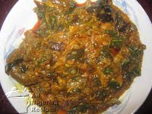
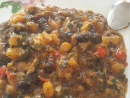

Name of food: EkpangNkukwo
About the food: EkpangNkwukwo is one of the Nigerian cocoyam recipes made with grated cocoyam, water yam, cocoyam leaves and periwinkle. It is a Nigerian food recipe native to the South South Eastern Nigeria - the Cross River and Akwa Ibom States of Nigeria. Ekpang Nkwukwo is so special that it is reserved for special occasions. Ekpangkukwo is the native dish of Cameroonian and Nigerian ( Specifically Bakweri, Bafaw Oroko, Cross River State and Akwa Ibom state). It is made with freshly grated cocoyams that are wrapped in cocoyam leaves.
| S/N | Ingredients | Measurements |
|---|---|---|
| 1 | Cocoyam | 500g |
| 2 | Water Yam | 250g (Optional) |
| 3 | Vegetable | A big bunch of tender Cocoyam leaves | Pumpkin leaves & Scent leaves (Nchanwu) |
| 4 | Palm oil | a generous quantity |
| 5 | Crayfish | a handful |
| 6 | bulb Onions | 3 medium size |
| 7 | Periwinkles | 2 milk cups | 300g if shelled or 500g of unshelled periwinkle |
| 8 | Assorted Beef & Offal | Any quantity |
| 9 | Dried fish | Any quantity |
| 10 | Snail (Optional) | Any quantity |
| 11 | Pepper & Salt | to taste |
| 12 | Seasoning - Maggi / Knorr cubes | 2 each |
STEPS/ PROCEDURES/ THINGS TO NOTE WHEN PREPARING EKPANGNKUKWO
- Wash and cook the beef, offals and dry fish with the seasoning till done.
- Peel, wash and grate the cocoyam and water yam (if you will be using this). Mix the two together and set aside.
- Prepare the pot by rubbing a generous amount of red palm oil on the insides of the pot.
- Wash the tender cocoyam leaves and tear into medium pieces. If using pumpkin leaves, wash these and set aside.
- Blend the pepper and crayfish and set aside.
- Wash the shelled or unshelled periwinkles.
- Wash and slice the scent leaves into tiny pieces.
- If you will be using unshelled periwinkles, place these at the base of the well-oiled pot.
- Scoop a small quantity of the grated cocoyam into a piece of the torn cocoyam leaf or one pumpkin leaf. Wrap the cocoyam with the leaf and place in the pot. Repeat this procedure till all the grated cocoyam (and water yam) is exhausted.
- Add the pepper, crayfish, onions, shelled periwinkles and assorted beef.
- Add hot water to the level of the pot contents and set to cook on medium heat for 20 minutes.
- Leave to stand for 5 minutes and stir.
- Now, add the scent leaves, a generous amount of palm oil and salt to taste. Cook for more 5 minutes and the Ekpang Nkwukwo is done.
Some images of EkpangNkukwo
.jpg)
.jpg)

